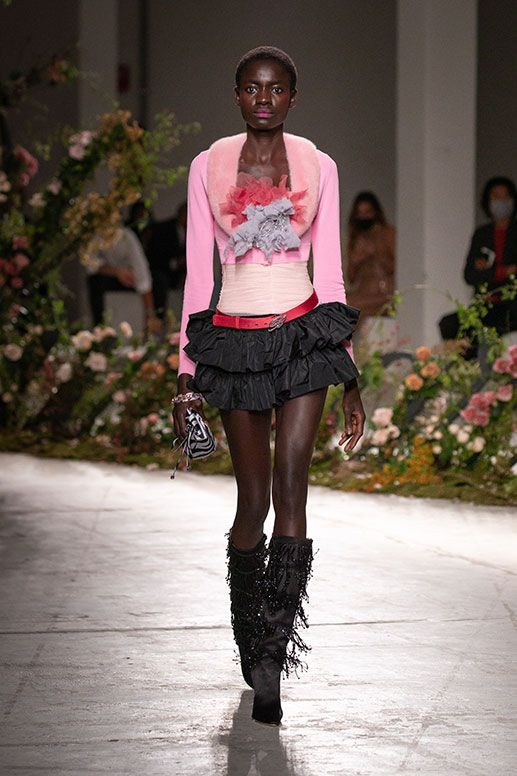

Eight Iconic Runway Looks to Recreate for Summer 2024
Bluemarine Gold Flare Pants Runway Look Forward 2002. Cheeta Print takes runway looks to the next level, these looks can work together or seperate. Fringe yellow boots look from Blumarine in 2021. All white runway look from 2005 show. Model wears baggy jeans and flowy white top. Gold Gaurav Gupta Haute couture. This desinger leans into plated metals in 2024 runway.Multicolored look from Blumarine, a vintage piece.

All white runway look from 2005 show. Model wears ruffled skirt and iconic top. Gold Saint Serman Haute couture. This desinger leans into plated metals in 2023 runway.